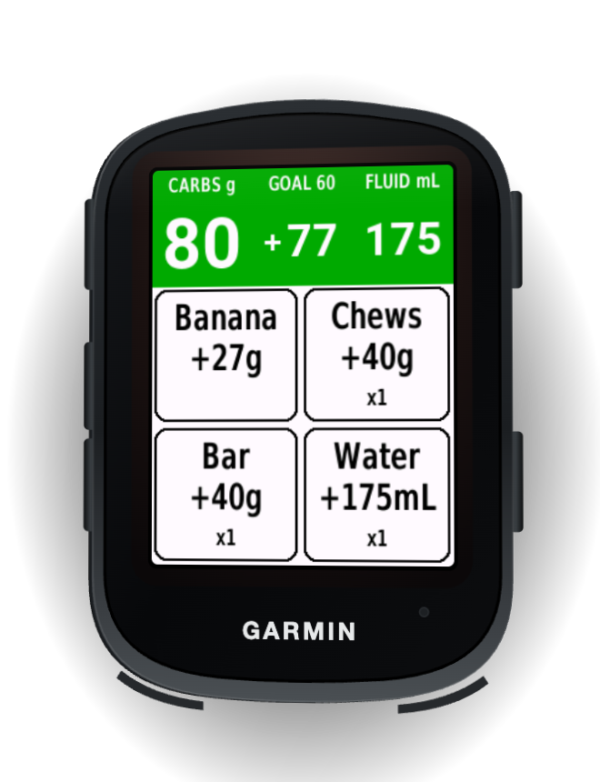
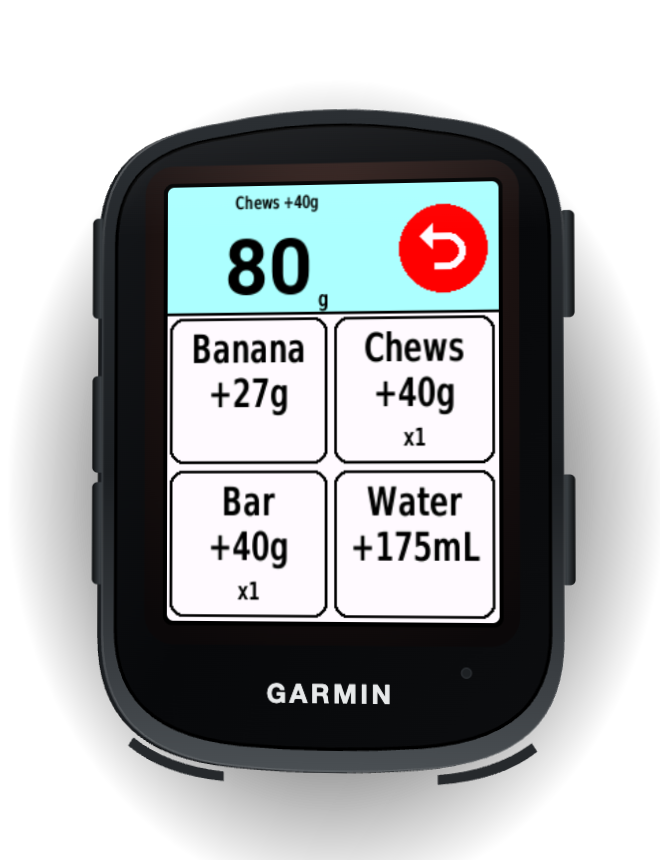
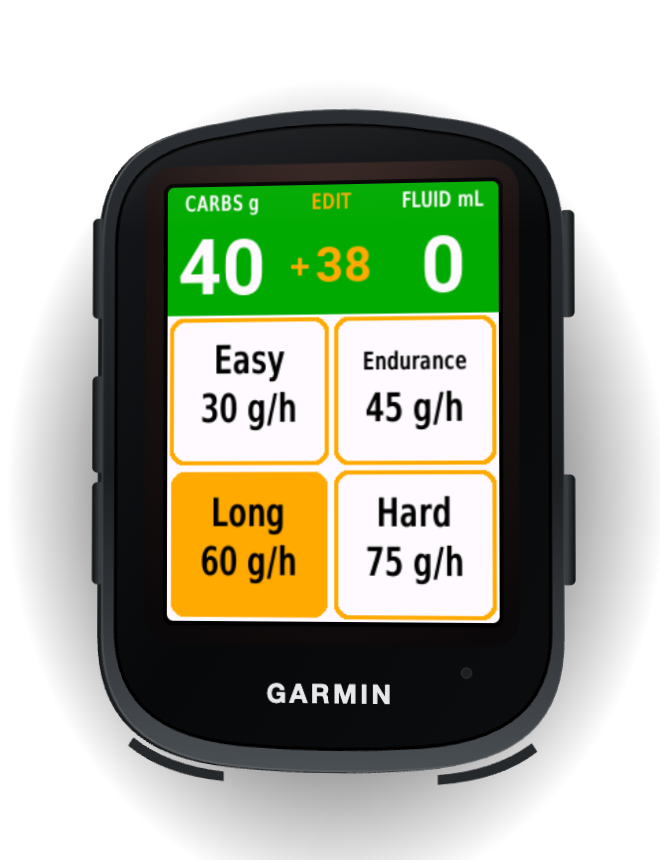
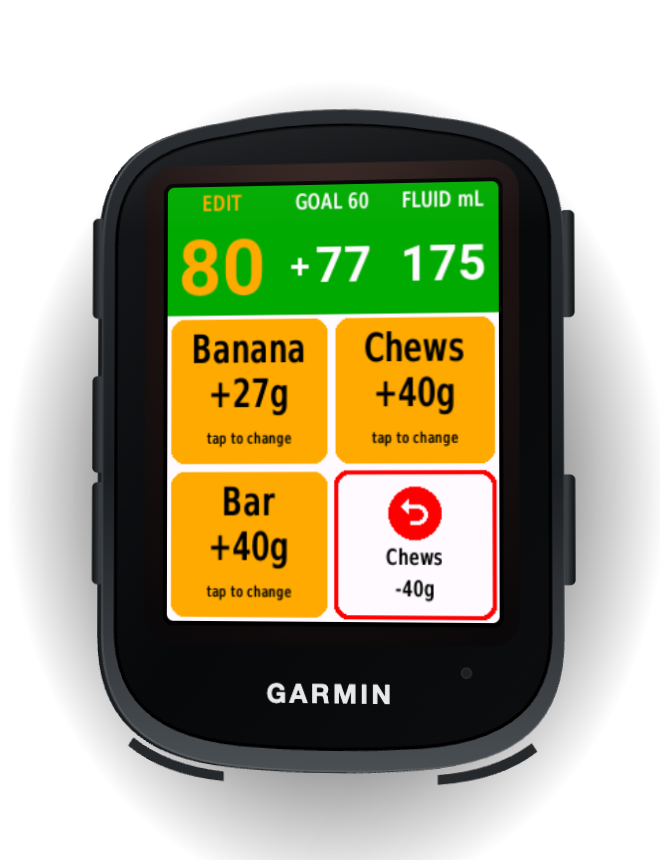
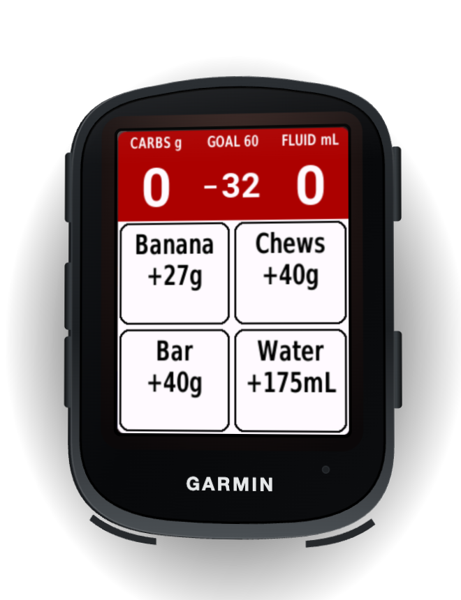
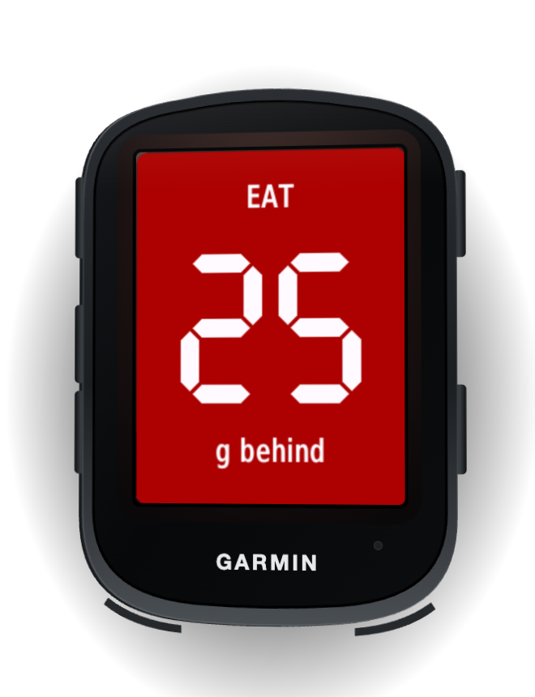

Fuel smarter.
Ride farther.
Fuel Field lets you log carbs and fluid with one tap while you ride. It shows how far ahead of or behind your hourly carb goal you are, warns you when you fall behind, and saves everything to your ride's FIT file.
Free · Version 4.1
Setup
- Install Fuel Field from the Connect IQ Store (on your phone, or Garmin Express on a computer), then sync your Edge.
- Add it to a data screen: on the Edge, open your activity profile → Data Screens, add a screen with a one-field layout, and pick Connect IQ → Fuel Field. It's designed for a full screen.
- Turn on the EAT alert: in the same activity profile, go to Alerts → Connect IQ and enable Fuel Field.
- Set your snacks and drinks in the Garmin Connect app: your Edge → Connect IQ apps → Fuel Field → Settings. Changes reach the Edge on the next sync.
Settings
| Setting | What it does | Default |
|---|---|---|
| Snacks 1–6 | Name, carbs (g), sodium (mg) and caffeine (mg) per tap. Leave a name blank to turn that slot off. Names are letters and numbers, up to 10 characters. | Gel, Chews, Bar, Banana, Caf Gel |
| Drinks 1–2 | Name, fluid (mL) and sodium (mg) per tap. Drinks don't count carbs; log drink-mix carbs with a snack slot. | Water 175 mL, Hydration 175 mL |
| Goal presets 1–4 | Label and g/h for the four goals in goal edit mode. | Easy 30, Endurance 45, Long 60, Hard 75 |
| Alert every X g behind | The EAT alert fires each time you fall this much further behind. | 25 g |
| Edit timeout | Seconds before an edit mode closes by itself. | 20 s |
| Tap beep | A short beep when a tap logs an item or undo removes one. | On |
Snack and drink amounts are locked for the current ride, so your totals stay consistent. Changes made mid-ride apply from your next ride. Alert and goal settings apply right away.
How it works
The top bar shows CARBS g · GOAL with how far ahead (+) or behind (−) you are · FLUID mL. It's green while you're on track and turns red once you're one alert step behind. The goal counts elapsed time, so it keeps running through stops. Below the top bar are four big buttons: three snacks and a drink.

One tap to log
Tap a button to log one item. It flashes blue, and the top bar shows what you logged and your new total for 5 seconds. Tap the red undo icon to take it back.

Pick your goal
Tap the middle of the top bar to choose one of your four goal presets in g/h.

Change buttons, undo older items
Tap the left of the top bar to choose which snacks are on the buttons (tap the right for drinks). In these edit modes, one button becomes an undo for your most recent snack or drink.

Know where you stand
The top bar turns red when you're one alert step behind your goal.

EAT alert
A full-screen EAT alert and a tone each time you fall another alert step behind. It waits until you've closed any edit mode or confirmation.
Logged to your ride
Totals, counts, sodium and caffeine are saved in the FIT file and show up in Garmin Connect.
After you press Stop, taps are blocked so your ride summary always matches your records ("TIMER STOPPED / resume to log"). Logging still works while you're paused.
Workout carb goal
Put a carb tag in the first step of a structured workout (for example, from Intervals.icu). When you start the workout and press Start, Fuel Field uses that tag as your goal for the ride. You'll see WORKOUT GOAL 60 g/h, and the goal cell reads WKT 60.
- Tags it understands, in any case:
CHO60,CHO 60,CHO60g,carbs 60,carbs: 60,60 g/h. Values from 0 to 150. - Example first step in Intervals.icu:
- CHO60 Warmup 10m 55% - The tag must stand alone, so
ECHO60andCHO60xare ignored. - Start the workout on the Edge before you press Start. If no tag is found, you'll see "NO CHO TAG IN WORKOUT" with the step's text, so you can spot a typo.
- Picking a goal yourself replaces the workout goal for that ride.
FIT file data
Fuel Field writes these fields (they use all 16 Connect IQ developer fields, so it can't share a ride with another field that uses them):
| Field | Where | Meaning |
|---|---|---|
carbs_total, water_total | Every record (chart) | Running totals in g and mL |
carb_debt | Every record (chart) | Grams behind goal (negative = ahead) |
carbs_session, water_session, sodium_session, caffeine_session | Ride summary | Ride totals |
carb_goal | Ride summary | Goal used, in g/h |
count_snack1–6, count_drink1–2 | Ride summary | Taps per slot |
FAQ
My settings don't show up on the Edge.
Install from the Connect IQ Store and sync after changing settings. Snack and drink changes made mid-ride apply from the next ride. A copy loaded by cable (sideloaded) always uses the defaults.
I don't get the EAT pop-up.
Enable Fuel Field under your activity profile → Alerts → Connect IQ. Also check your "Alert every X g behind" setting. The Edge 840 has no vibration motor, so the alert is a pop-up plus a tone.
A tap didn't log after I stopped.
That's on purpose. After Stop, nothing more is written to the ride, so taps are blocked. Resume the timer to log again.
The workout goal didn't appear.
The tag has to be in the first step's name or notes, and the workout must be started on the Edge before you press Start. Fuel Field reads only the first step, so you get one goal per ride.
Which devices are supported?
The Garmin Edge 840 and Edge 840 Solar.
Contact
Questions, bugs or ideas? Email fondest.doting4h@icloud.com. For a bug, please include your Edge model, what you tapped, and the date of the ride.